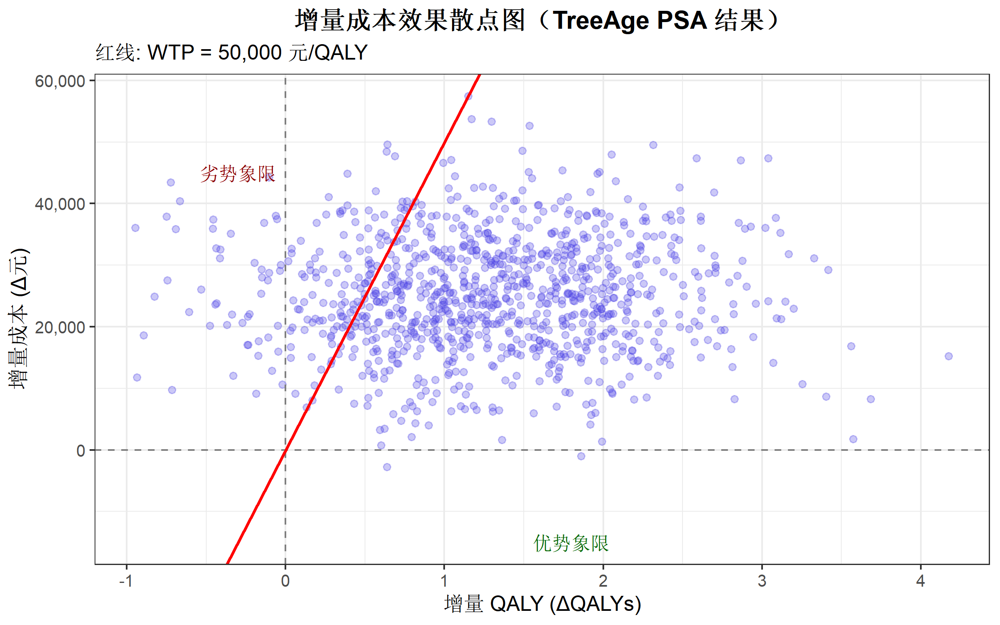
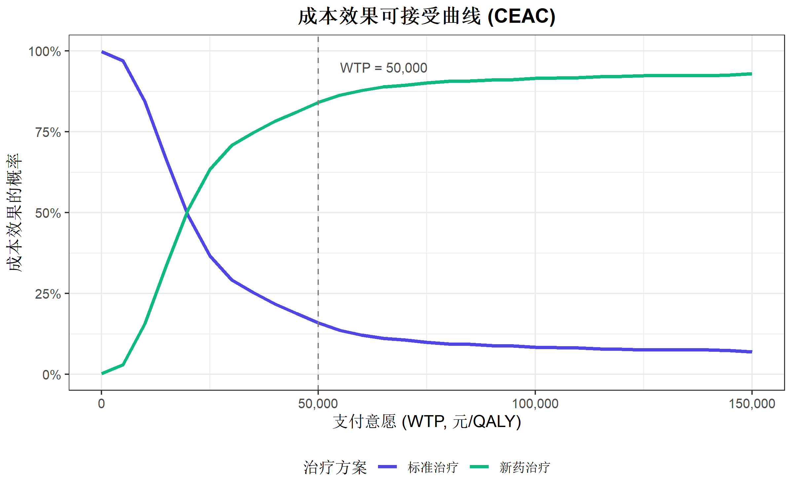

library(dplyr)
library(survival)
# 从原始数据估计转移概率
transition_probs <- survival_data %>%
group_by(from_state) %>%
summarise(
p_to_disease = mean(to_state == "disease"),
p_to_death = mean(to_state == "death"),
p_stay = 1 - p_to_disease - p_to_death
)
# 导出为 CSV 供 TreeAge 使用
write.csv(transition_probs, "transition_probs.csv", row.names = FALSE)TreeAge Pro：卫生经济学决策分析软件指南
特殊应用
卫生经济学
TreeAge Pro
软件教程
什么是 TreeAge Pro
TreeAge Pro 是一款专业的卫生经济学决策分析软件，广泛应用于医疗卫生技术评估（HTA）、卫生经济学评价和临床决策分析。它提供直观的图形界面来构建决策树、马尔可夫模型，并进行成本效果分析。
软件特点
| 特点 | 说明 |
|---|---|
| 可视化建模 | 通过拖拽节点直观构建决策模型 |
| 集成分析 | 内置成本效果分析、敏感性分析等功能 |
| 专业输出 | 生成符合 ISPOR 标准的报告和图表 |
| 灵活定制 | 支持变量定义、函数表达式和复杂逻辑 |
与 R 语言的关系
虽然 R 语言的 heemod、hesim 等包也能进行卫生经济学分析，但 TreeAge Pro 具有以下优势：
- 更直观的模型可视化：实时展示决策树和马尔可夫模型结构
- 内置验证功能：自动检查概率总和、循环依赖等问题
- 适合复杂模型：处理大型模型时更稳定
- 团队协作：便于与非编程背景的合作者沟通
💡 建议将 TreeAge Pro 与 R 语言结合使用：在 TreeAge 中构建模型逻辑，用 R 进行数据预处理和结果可视化。
软件安装与界面概览
获取软件
TreeAge Pro 是商业软件，可从 TreeAge 官网 获取。官网提供：
- 试用版：30 天全功能试用
- 教育版：学术机构折扣
- 完整版：Healthcare 或 Pro Suite 许可
主要界面组件
TreeAge Pro 的工作界面主要包含以下部分：
| 区域 | 功能 |
|---|---|
| 主菜单 | 文件、编辑、Tree、分析等功能入口 |
| 工具栏 | 快捷操作按钮：节点类型选择、运行分析等 |
| 模型画布 | 可视化展示和编辑决策模型 |
| 变量面板 | 定义和管理全局变量 |
| 属性面板 | 查看和编辑选中节点的属性 |
节点类型
决策模型由不同类型的节点构成：
| 节点 | 符号 | 用途 |
|---|---|---|
| 决策节点 | 🔲（方形） | 决策者可以选择的策略 |
| 机会节点 | ⚪（圆形） | 不确定事件，由概率决定 |
| 终端节点 | ▲（三角形） | 路径终点，记录回报值 |
| Markov节点 | 🔵（紫色圆角） | 马尔可夫过程起点 |
构建决策树模型
决策树是最基础的决策分析模型，适用于一次性或短期决策问题。
第一步：创建新模型
- File > New 或快捷键
Ctrl+N - 选择 Healthcare 模板类别
- 选择 Decision Tree（Cost-Effectiveness）
- 指定保存位置和文件名（
.trex格式）
第二步：添加策略分支
决策节点（根节点）代表需要比较的策略选项：
- 右键点击决策节点 → Add Branch
- 为每个策略命名（例如：“标准治疗”、“新药治疗”）
- 重复上述步骤添加所有比较策略
示例结构：
决策节点 [Choice]
├── 标准治疗 [Strategy]
└── 新药治疗 [Strategy]第三步：构建事件路径
在每个策略下添加机会节点和终端节点：
- 选中策略分支末端
- 右键 → Change Type > Chance 添加机会节点
- 添加可能的事件结果（如”治疗成功”、“治疗失败”）
- 为每个结果分支设置概率值（所有分支概率之和必须等于1）
完整结构示例：
决策节点 [Choice]
├── 标准治疗
│ └── [Chance] 治疗结果
│ ├── 成功 (p=0.6) → [Terminal]
│ └── 失败 (p=0.4) → [Terminal]
└── 新药治疗
└── [Chance] 治疗结果
├── 成功 (p=0.8) → [Terminal]
└── 失败 (p=0.2) → [Terminal]第四步：设置回报值
在终端节点设置成本（Cost）和效果（Effectiveness）：
- 点击终端节点
- 在属性面板中找到 Payoff 区域
- 输入成本值（如
10000） - 输入效果值（如
0.9表示 QALY）
💡 技巧：可以使用变量代替具体数值，便于后续敏感性分析。
第五步：运行决策树分析
- 选中决策树根节点
- 菜单 Analysis > Roll Back 或按
F5 - 查看每个策略的期望值（Expected Value）
- 期望值最优的策略会被标记
定义模型变量
使用变量可以让模型更清晰、更易于维护和进行敏感性分析。
创建变量
- 菜单 Tree > Variable Properties 或快捷键
Ctrl+Shift+V - 点击 Add 添加新变量
- 填写变量属性：
- Name：变量名（如
p_success） - Definition：变量值或表达式（如
0.8） - Description：可选的描述说明
- Name：变量名（如
变量类型
| 类型 | 说明 | 示例 |
|---|---|---|
| 数值变量 | 固定数值 | c_treatment = 5000 |
| 表达式 | 计算公式 | p_failure = 1 - p_success |
| 表格变量 | 二维查找表 | 年龄-性别死亡率表 |
| 分布变量 | 用于 PSA 的概率分布 | Dist(Beta, 40, 60) |
常用表达式
# 补概率
p_failure = 1 - p_success
# 条件表达式
risk = if(age > 65; high_risk; low_risk)
# 贴现
discounted_cost = cost * (1 / (1 + discount_rate))^_stage
# Markov 阶段引用
cumulative_cost = Cost + (1 / (1 + r))^_stage * c_annual构建马尔可夫模型
马尔可夫模型适用于需要模拟长期疾病进展的分析场景。
什么是马尔可夫模型
马尔可夫模型将患者状态离散化为有限个健康状态，并模拟患者在各状态间的周期性转移。
| 概念 | 说明 |
|---|---|
| 健康状态 | 如”健康”、“疾病”、“死亡” |
| 周期 | 时间单位（如1年、1个月） |
| 转移概率 | 从一个状态转移到另一状态的概率 |
| 周期奖励 | 在某状态停留一个周期的成本/效果 |
第一步：添加 Markov 节点
- 在策略分支末端右键 → Change Type > Markov
- 节点变为紫色圆角矩形
- 在 Markov 信息框中设置：
- Init Cost：初始成本
- Init Eff：初始效果
- Term Cond：终止条件（如
_stage >= 20） - Half-Cycle Correction：可选的半周期校正
第二步：添加健康状态
- 右键 Markov 节点 → Add Branch 添加状态分支
- 将分支类型设为 Markov State
- 重复添加所有需要的健康状态
典型三状态模型：
Markov 节点
├── [State] 健康
├── [State] 疾病
└── [State] 死亡第三步：定义状态转移
在每个状态下定义转移路径：
- 选中状态节点
- 添加机会分支表示可能的转移
- 设置各转移的概率
- 用特殊终端节点标记转移目标
状态转移逻辑：
[State] 健康
└── [Chance]
├── 保持健康 (p=0.85) → [#healthy]
├── 进展为疾病 (p=0.14) → [#disease]
└── 死亡 (p=0.01) → [#dead]💡 使用
#statename语法引用目标状态（跳转标记）。
第四步：设置状态奖励
每个状态需要设置进入或停留的成本和效果：
- 选中状态节点
- 在属性面板找到 Rewards 区域
- 设置：
- Incr Cost：每个周期的增量成本
- Incr Eff：每个周期的增量效果（QALY）
- Final Cost/Eff：可选的终末值
示例设置：
| 状态 | 周期成本 | 周期效果 (QALY) |
|---|---|---|
| 健康 | 1,000 | 1.0 |
| 疾病 | 8,000 | 0.6 |
| 死亡 | 0 | 0 |
第五步：设置终止条件
马尔可夫模型需要明确何时停止模拟：
# 按周期数终止（20年时间范围）
_stage >= 20
# 按吸收状态比例终止（99%进入死亡）
_stage_sum[Dead] >= 0.99
# 组合条件
_stage >= 50 OR _stage_sum[Dead] >= 0.99第六步：半周期校正
马尔可夫模型假设状态转移发生在周期的某个时点，可能导致偏差。半周期校正是常用的调整方法：
- 在 Markov 信息框勾选 Half-Cycle Correction
- 或手动设置初始/终末奖励的 0.5 倍
成本效果分析 (CEA)
设置分析参数
- 菜单 Tree > Model Setup Wizard 或工具栏齿轮图标
- 设置：
- Calculation Method：Cost-Effectiveness
- Willingness to Pay (WTP)：支付意愿阈值（如 50000）
- Payoff精度：成本为货币格式，效果为 LY 或 QALY
运行成本效果分析
- 选中决策节点
- 菜单 Analysis > Cost-Effectiveness
- 查看输出结果
理解分析输出
成本效果表
| 策略 | 成本 | 效果 | 增量成本 | 增量效果 | ICER |
|---|---|---|---|---|---|
| 标准治疗 | 50,000 | 5.2 | - | - | - |
| 新药A | 80,000 | 6.8 | 30,000 | 1.6 | 18,750 |
| 新药B | 120,000 | 7.5 | 70,000 | 2.3 | 30,435 |
关键指标
| 指标 | 公式 | 解释 |
|---|---|---|
| ICER | ΔCost / ΔEffect | 每多获得1个QALY的增量成本 |
| NMB | WTP × Effect - Cost | 净货币收益，越大越优 |
| NHB | Effect - Cost/WTP | 净健康收益 |
优势性分析
TreeAge Pro 自动识别被支配的策略：
| 类型 | 定义 | 图示 |
|---|---|---|
| 绝对优势 | 成本更高且效果更差 | 在CE平面右上象限 |
| 扩展优势 | ICER 高于更有效的替代方案 | 在效率前沿线下方 |
敏感性分析
单因素敏感性分析
检验单个参数变化对结果的影响：
- Analysis > 1-Way Sensitivity Analysis
- 选择要分析的变量
- 设置范围（Low, Base, High）
- 选择输出指标（ICER 或 NMB）
输出： - 阈值分析：找到策略选择反转的临界值 - 龙卷风图：展示各参数影响程度排序
双因素敏感性分析
同时变化两个参数：
- Analysis > 2-Way Sensitivity Analysis
- 选择两个变量及其范围
- 生成二维热图显示最优策略区域
概率敏感性分析 (PSA)
考虑多参数同时不确定：
为关键参数定义概率分布：
- 概率：Beta 分布
- 成本：Gamma 分布
- 相对风险：Log-normal 分布
Analysis > Probabilistic Sensitivity Analysis
设置模拟次数（通常 1000-10000 次）
查看输出：
- CE 散点图：各模拟结果的成本-效果分布
- 增量 CE 散点图：相对于基准的增量分布
- CEAC：成本效果可接受曲线
成本效果可接受曲线 (CEAC)
CEAC 展示不同 WTP 阈值下各策略具有成本效果的概率：
- X 轴：支付意愿（WTP）
- Y 轴：该策略成本效果的概率
- 解读：在给定 WTP 下，选择 CEAC 值最高的策略
实用技巧
模型调试
| 问题 | 检查方法 |
|---|---|
| 概率不等于1 | Trees > Validate Tree |
| 变量未定义 | 变量面板检查红色标记 |
| 循环引用 | 查看变量依赖关系图 |
| Markov不收敛 | 检查终止条件和吸收状态 |
模型效率
- 使用子树（Subtree）重用相同结构
- 用克隆（Clone）复制带变量的结构
- 设置合理的 Markov 周期数和 PSA 模拟次数
报告生成
- File > Export > Report
- 选择输出格式（Word、PDF、HTML）
- 自定义包含的分析结果和图表
R 语言与 TreeAge 的结合使用
虽然 TreeAge Pro 是图形化软件，但可以与 R 语言配合使用来增强分析能力。
数据准备阶段（R）
在 R 中进行数据清洗和参数估计：
结果可视化阶段（R）
将 TreeAge 导出的结果在 R 中进行高级可视化：
library(ggplot2)
library(scales)
library(dplyr)
# 模拟 TreeAge PSA 导出数据
set.seed(42)
psa_results <- data.frame(
simulation = 1:1000,
strategy = rep(c("标准治疗", "新药治疗"), each = 1000),
cost = c(rnorm(1000, 50000, 5000), rnorm(1000, 75000, 8000)),
qaly = c(rnorm(1000, 5.2, 0.5), rnorm(1000, 6.5, 0.6))
)
# 增量成本效果散点图
ref_data <- psa_results %>%
filter(strategy == "标准治疗") %>%
select(simulation, ref_cost = cost, ref_qaly = qaly)
incremental <- psa_results %>%
filter(strategy == "新药治疗") %>%
left_join(ref_data, by = "simulation") %>%
mutate(
delta_cost = cost - ref_cost,
delta_qaly = qaly - ref_qaly
)
ggplot(incremental, aes(x = delta_qaly, y = delta_cost)) +
geom_point(alpha = 0.3, color = "#4f46e5") +
geom_hline(yintercept = 0, linetype = "dashed", color = "gray50") +
geom_vline(xintercept = 0, linetype = "dashed", color = "gray50") +
geom_abline(intercept = 0, slope = 50000, color = "red", linewidth = 1) +
scale_y_continuous(labels = comma_format()) +
labs(
title = "增量成本效果散点图（TreeAge PSA 结果）",
subtitle = "红线: WTP = 50,000 元/QALY",
x = "增量 QALY (ΔQALYs)",
y = "增量成本 (Δ元)"
) +
theme_bw(base_size = 12) +
theme(
plot.title = element_text(hjust = 0.5, face = "bold")
) +
annotate("text",
x = 1.8, y = -15000, label = "优势象限",
color = "darkgreen", size = 4
) +
annotate("text",
x = -0.3, y = 45000, label = "劣势象限",
color = "darkred", size = 4
)
制作 CEAC 曲线
# 计算不同 WTP 下的 CEAC
calculate_ceac <- function(psa_data, wtp_range) {
strategies <- unique(psa_data$strategy)
n_sim <- length(unique(psa_data$simulation))
results <- data.frame()
for (wtp in wtp_range) {
nmb_data <- psa_data %>%
mutate(nmb = wtp * qaly - cost)
best_strategy <- nmb_data %>%
group_by(simulation) %>%
slice_max(nmb, n = 1) %>%
ungroup()
prob_best <- best_strategy %>%
count(strategy) %>%
mutate(probability = n / n_sim)
for (s in strategies) {
if (!s %in% prob_best$strategy) {
prob_best <- bind_rows(
prob_best,
data.frame(strategy = s, n = 0, probability = 0)
)
}
}
prob_best$wtp <- wtp
results <- bind_rows(results, prob_best)
}
results
}
wtp_range <- seq(0, 150000, by = 5000)
ceac_data <- calculate_ceac(psa_results, wtp_range)
ggplot(ceac_data, aes(x = wtp, y = probability, color = strategy)) +
geom_line(linewidth = 1.2) +
geom_vline(xintercept = 50000, linetype = "dashed", color = "gray50") +
scale_x_continuous(labels = comma_format()) +
scale_y_continuous(limits = c(0, 1), labels = percent_format()) +
scale_color_manual(values = c("#4f46e5", "#10b981")) +
labs(
title = "成本效果可接受曲线 (CEAC)",
x = "支付意愿 (WTP, 元/QALY)",
y = "成本效果的概率",
color = "治疗方案"
) +
theme_bw(base_size = 12) +
theme(
legend.position = "bottom",
plot.title = element_text(hjust = 0.5, face = "bold")
) +
annotate("text",
x = 55000, y = 0.95, label = "WTP = 50,000",
hjust = 0, color = "gray30", size = 3.5
)
常见问题解答
模型验证
Q: 如何验证我的模型是否正确？
- 技术验证：使用
Tree > Validate Tree检查技术错误 - 内部验证：极端值测试（参数设为0或1时结果是否合理）
- 外部验证：与文献报道或其他模型结果比较
- 敏感性分析：检查结果对参数变化的敏感程度
参数选择
Q: 概率参数应该用什么分布？
| 参数类型 | 推荐分布 | 原因 |
|---|---|---|
| 概率 | Beta | 范围 [0,1]，灵活形状 |
| 成本 | Gamma | 非负，右偏 |
| 相对风险/比值比 | Log-normal | 非负，可大于1 |
| 效用 | Beta | 范围 [0,1] |
结果解读
Q: ICER 为负数怎么解释？
- ΔCost < 0, ΔEffect > 0：新方案”优势”（更便宜且更有效）
- ΔCost > 0, ΔEffect < 0：新方案”被支配”（更贵且更差）
- 两种情况都不需要计算 ICER，直接判断优劣
学习资源
官方资源
| 资源 | 链接 |
|---|---|
| TreeAge 帮助文档 | TreeAge Help |
| 教程视频 | TreeAge 官方 YouTube |
| 示例模型库 | 软件安装目录的 Examples 文件夹 |
方法学参考
| 资源 | 说明 |
|---|---|
| ISPOR | 国际药物经济学学会，发布 HTA 方法指南 |
| DARTH 工作组 | 开源决策建模教程和 R 代码 |
| York HTA Program | 英国约克大学 HTA 培训资源 |
推荐书籍
- Decision Modelling for Health Economic Evaluation - Briggs, Claxton, Sculpher
- Applied Methods of Cost-effectiveness Analysis in Healthcare - Gray et al.
总结
TreeAge Pro 是卫生经济学决策分析的强大工具，本教程涵盖了：
| 主题 | 内容要点 |
|---|---|
| 决策树模型 | 创建策略分支、设置概率和回报、Roll Back 分析 |
| 马尔可夫模型 | 定义健康状态、转移概率、周期奖励、终止条件 |
| 成本效果分析 | ICER 计算、优势性判定、CE 平面图 |
| 敏感性分析 | 单因素、双因素、概率敏感性分析、CEAC |
| 与 R 结合 | 数据准备、结果可视化、高级分析 |
💡 最佳实践：在简单模型上充分练习，理解每个分析步骤的含义，然后再应用于实际研究项目。
相关教程
本教程是卫生经济学系列的一部分，配合以下教程使用效果更佳：
- R语言卫生经济学分析 - R 语言实现成本效果分析
- 决策分析方法论基础 - 理论背景和方法论要点